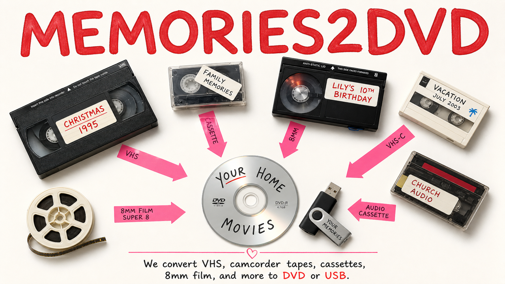

VHS • 8mm • Super 8 • Slides • Photos • Thumb Drives
Local transfers for tapes, reels, slides, and photos.
Bring your media to our booth at Uncle John's Flea Market. We transfer it to DVD or thumb drive without mailing it away.
We handle VHS, camcorder tapes, 8mm reels, Super 8, 35mm slides, and printed photographs.
Drop off and pick up at Uncle John's Flea Market in Cedar Lake, Indiana.
You get your original media back along with the new DVD or thumb drive copies.
If something needs more work or affects the price, we contact you first.
Booth Sign
This is the sign at the booth.
If you are looking for us at Uncle John's Flea Market, this is what to watch for.
It shows the kinds of tapes, film, and audio formats we transfer most often.

Next Step
Choose what you want to know
Use these pages for formats, process, and pricing.
Contact
Bring your media Saturday or Sunday
Stop by Uncle John's Flea Market in Cedar Lake, Indiana with your tapes, reels, slides, or photographs.
- Bring whatever you have
- We look at it with you
- We quote it by media type and length
Uncle John's Flea Market, Cedar Lake, Indiana
Booth hoursSaturday and Sunday